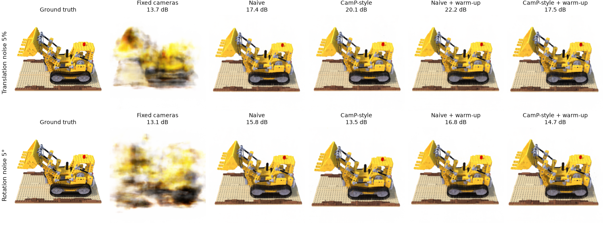
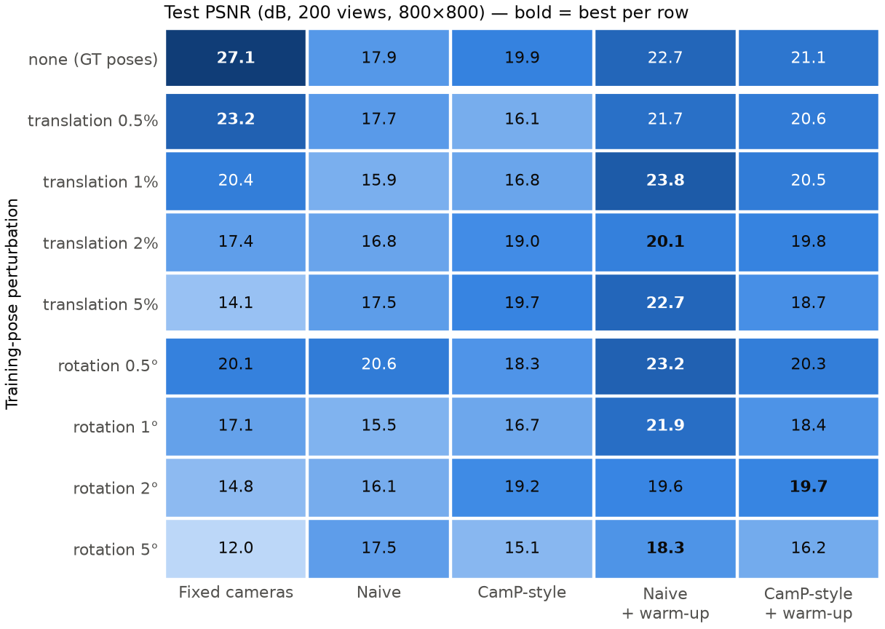
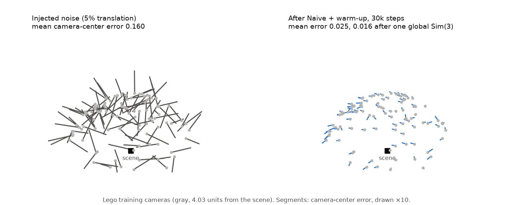
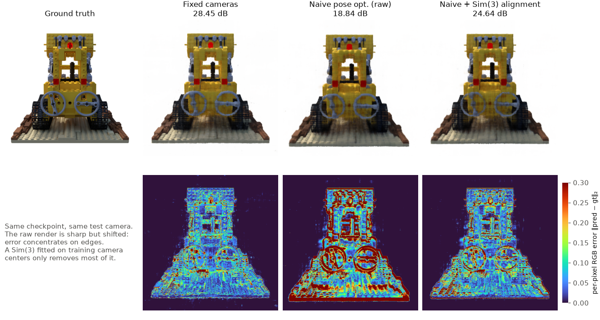
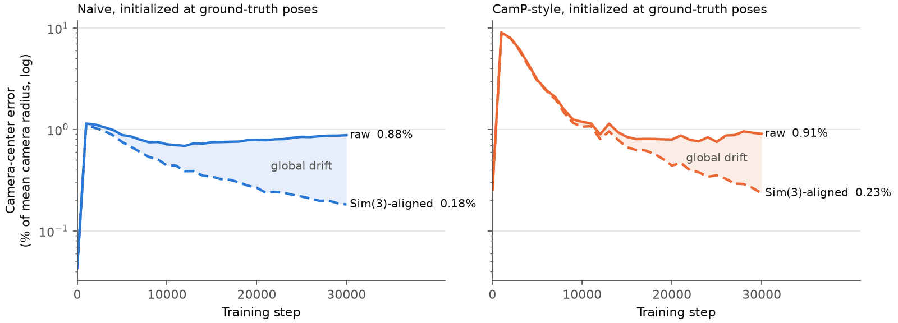

PoseGuard-NeRF
When does joint camera-pose optimization help NeRF,
and when does it just move the world?
Independent research project, 2026
Real capture pipelines never give NeRF perfect camera poses, so a common remedy is to optimize per-camera pose corrections jointly with the radiance field. This raises two questions that are usually answered with a single test-PSNR number: how much does joint optimization help under a given amount of pose noise, and when test PSNR goes down, is the reconstruction actually worse, or is it a good reconstruction sitting in a slightly different coordinate frame than the held-out test cameras?
All runs use Nerfstudio's vanilla-NeRF on the Lego scene, trained for 30k steps. I perturb the training cameras at 9 noise levels (no noise; translation 0.5 / 1 / 2 / 5%; rotation 0.5 / 1 / 2 / 5°) and train 5 methods on each, for 45 runs in total:
Every run is followed by a pose audit and a Sim(3) alignment diagnostic: fit a similarity transform between ground-truth and optimized training camera centers, apply it to the test cameras, and re-render with the network frozen. No test image is used for fitting and no weight is updated, so any gain comes purely from undoing a global change of frame.

Fixed-camera NeRF is surprisingly fragile: test PSNR drops from 27.1 dB with exact poses to 14.1 dB at 5% translation noise and 12.0 dB at 5° rotation noise. Joint pose optimization recovers most of this quality, and the recovered training cameras move back close to their ground-truth positions.


Starting the camera learning rate near zero and ramping it up over 2,500 steps makes Naive pose optimization better in 9/9 pose conditions, by +4.3 dB on average. At 5% translation noise it lifts test PSNR from 14.1 dB (fixed cameras) to 22.7 dB.
The counter-intuitive case is the noise-free one. Enabling Naive pose optimization from exact poses lowers test PSNR from 27.1 dB to 17.9 dB, which naively reads as “pose optimization damages the scene.” The renders say otherwise: they are sharp but shifted, so the error concentrates on object edges. Re-rendering the test cameras after a Sim(3) fitted on training camera centers only, with the network frozen, recovers +5.5 dB for Naive and +6.1 dB for CamP-style.

| Method (GT-pose initialization) | Raw PSNR | Sim(3)-aligned PSNR | Gain |
|---|---|---|---|
| Fixed cameras | 27.12 | 27.12 | 0.00 |
| Naive | 17.91 | 23.39 | +5.48 |
| CamP-style | 19.90 | 26.04 | +6.14 |
| Naive + warm-up | 22.71 | 26.42 | +3.71 |
| CamP-style + warm-up | 21.08 | 25.98 | +4.90 |
The pose diagnostics logged during training tell the same story: raw camera-center error plateaus, while the error left after removing one global similarity transform keeps shrinking. The scene is being reconstructed well; the world it lives in is moving.

When camera poses are optimized, raw novel-view metrics measure two things at once: reconstruction quality and global coordinate drift relative to the test cameras. Reporting aligned metrics next to raw ones, using only training cameras to fit the alignment, separates the two.
One scene (Lego) and one seed (42). CamP-style is a controlled re-implementation, not the official code. The warm-up changes the whole camera learning-rate schedule, so the early phase alone is not isolated. Full aligned rendering covers the GT-pose condition only. The alignment is a diagnostic of how test metrics are measured, not a new training method, and these results do not establish behavior on other scenes or seeds.
Code, configs, metrics and poses for all 45 runs are in the repository (MIT license). The published numbers can be re-checked on a CPU without any dataset or checkpoint, and CPU tests run in CI. The checkpoints behind the alignment table and the comparison video are attached to the v1.0.0 release.
@misc{chu2026poseguardnerf,
title = {PoseGuard-NeRF: When Does Joint Camera-Pose Optimization
Help NeRF, and When Does It Just Move the World?},
author = {Chu, Jiaming},
year = {2026},
howpublished = {\url{https://github.com/chu-jiaming/PoseGuard-NeRF}},
note = {Version 1.0.0}
}